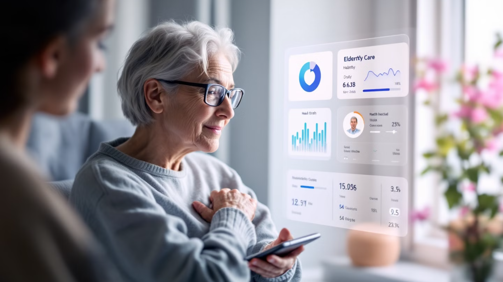
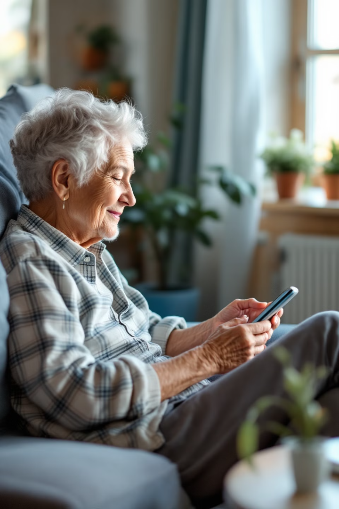

Dian 1 sisältö
Hoivita OloSeuranta -palvelu – Turvaa, säästöjä ja mielenrauhaa hoivan tueksi
Hoivita OloSeuranta on uusi, huomaamaton tapa parantaa ikäihmisten turvallisuutta, vähentää hoitohenkilökunnan työkuormaa ja tuoda selkeitä säästöjä. Yhdessä SafeApp-sovelluksen kanssa se tarjoaa helppokäyttöisen ja visuaalisen näkymän hoidon tarpeisiin – ilman monimutkaisia järjestelmiä.
Dian 2 sisältö
Palveluasuminen – Tieto auttaa ennaltaehkäisemään
Sängystä nousemisen seuranta
Hoitajat saavat ilmoituksen heti, kun asukas yrittää nousta sängystä
Yöaikaisen liikkumisen valvonta
Järjestelmä havaitsee, jos asukas vaeltelee käytävillä
WC-käyntien seuranta
Poikkeamat havaitaan ajoissa ja niihin voidaan reagoida
Valaistuksen käytön tarkkailu
Auttaa ennaltaehkäisemään kaatumisia ja lonkkamurtumia, joiden hoito voi maksaa jopa 30 000 € per tapaus
Dian 3 sisältö
Kotihoito – Itsenäisyyttä ja turvaa omassa kodissa
Yölliset ovenavaukset
OloSeuranta havaitsee, jos asukas liikkuu öisin ulko-ovesta, mikä voi olla merkki eksymisriskistä
Jääkaapin käyttö
SafeApp-sovellus kertoo, jos jääkaappia ei avata lainkaan päivän aikana, mikä voi viitata ravitsemuksen ongelmiin
Asunnon lämpötilaolosuhteet
Järjestelmä valvoo kodin lämpötilaa ja ilmoittaa poikkeamista, jotka voivat vaarantaa asukkaan terveyden
Nopea reagointi
Tämä mahdollistaa nopean reagoinnin ja auttaa ikäihmisiä elämään turvallisemmin kotona pidempään
Dian 4 sisältö
Sairaalaosastot – Estä vaaralliset nousuyritykset
Välitön hälytys
Järjestelmä hälyttää heti, jos potilas yrittää nousta ilman lupaa
Henkilökunnan reagointi
Hoitohenkilökunta saa tiedon ja voi reagoida tilanteeseen nopeasti
Kaatumisten esto
Geriatriset, ortopediset ja neurologiset osastot hyötyvät erityisesti sänkylepo-potilaiden valvonnassa
Toipumisen tuki
Varmistaa henkilökunnan oikea-aikainen reagointi – ilman jatkuvaa fyysistä valvontaa
Dian 5 sisältö
Miksi valita OloSeuranta?
Ei-puettava, huomaamaton teknologia
Reaaliaikaiset hälytykset ja trenditiedot
Helppo asentaa – ei poraamista
Toimii yhdellä mobiilisovelluksella (SafeApp)
Soveltuu palveluasumiseen, kotihoitoon ja sairaaloihin
Yhteistyössä hoidon ammattilaisten kanssa
Hoivita OloSeuranta perustuu yli miljoonaan datapisteeseen ja käytännön testaukseen. Tavoitteemme on tukea hoitotyötä, keventää henkilöstön kuormaa ja parantaa asukkaiden elämänlaatua – kustannustehokkaasti.
Ota yhteyttä – Autamme mielellämme
Haluatko kuulla lisää Hoivita OloSeuranta -palvelusta tai varata esittelyn? Ota rohkeasti yhteyttä – räätälöimme ratkaisun juuri sinun yksikkösi tarpeisiin.
📞 Puh: 040 123 4567 ✉️ Sähköposti: info@hoivita.com